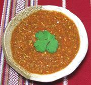

|
Salsa de Guajes & TomateMexico Puebla - Salsa de Guajes y Tomate | ||||
| Makes: Effort: Sched: DoAhead: |
3/4 cup *** 45 min Yes |
This is a tomato sauce flavored by an unusual bean, most similar to the Sataw bean of Southeast Asia. In Puebla, this sauce is sometimes used for a pork stew, but it can be used many other ways. | |||
|
1 2-1/2 3 2 1/4 1/3 |
# # cl c t |
Guaje Beans (1) Tomatoes Jalapeño (2) Garlic Cilantro Salt |
Do Ahead - (25 min)
|